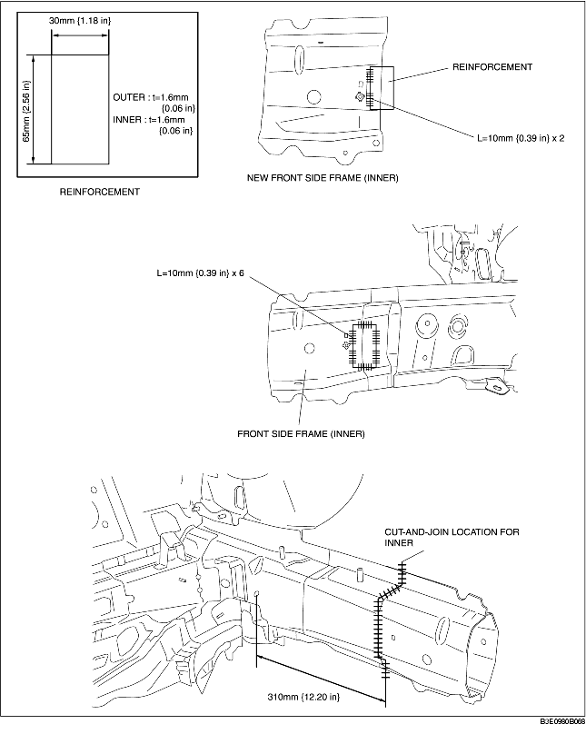
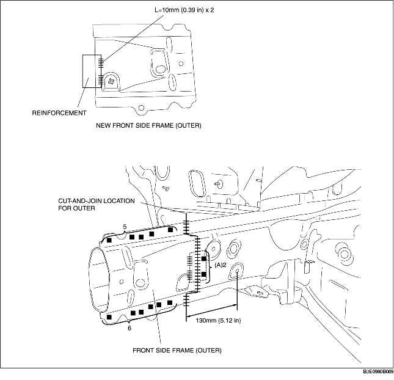

1. Make a reinforcement panel using the material of the front side frame.
2. To cut-and-join the new and existing parts, cut at the locations for the new part indicated in the figure below and bevel the locations where the new and existing parts are joined.
3. When installing the new parts, trial-fit new and existing parts, and then measure and adjust the body to conform with standard dimensions.
4. To install the inner, trial-fit the new and existing parts, weld the existing parts and the reinforcement, and then butt weld the new and existing parts.
5. Because the outer cannot be welded to the existing parts from the inside of the frame, drill 2 plug weld holes at the locations indicated by (A) on the existing parts. Install the reinforcement and the existing parts by plug welding from the outside of the frame, then butt weld the new and existing parts.
6. Grind the area where the inner and outer are butt welded with a disk grinder to finish the surface.

